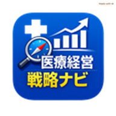

医療経営戦略ナビ地域の外来チェック
2040年の外来需要と、いまの診療所数を見てみましょう。
読み込み中…
出典と推計の見方
需要指数は製品版の一般診療所の外来推計を2025年＝100に換算したものです。2023年の受療状況と患者の流出入が続くと仮定しています。小児科系には15歳未満の全傷病の受療傾向を用います。
施設は選んだ診療科を標榜する一般診療所を各施設1回数えます。人口1万人当たりは施設数÷2025年推計人口×1万。都県平均は都県全体の施設数と人口から算出します。